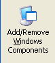
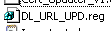
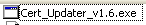

Special thanks to Nojus
Firstly you should get the PosReady patch [http://nojus.trexion.com/local/WinXP/tweaks/posreadyupdates.reg]
Install IE8 [https://web.archive.org/web/20110605220803/http://windows.microsoft.com/en-GB/internet-explorer/downloads/ie-8]
Then you will have to get TLS 1.1 - 1.2, Follow the following post instructions [https://nojus.trexion.com/blog/?p=64]
After you got TLS 1.1 - 1.2 make sure they are enabled then check if you have the update to root certificates
From the control panel, go to
from there go to 
and make sure this is marked
if its not mark it, click next and follow
the instructions on screen.
after that you should get the msft update root certificates thing [https://msfn.org/board/topic/175170-root-certificates-and-revoked-certificates-for-windows-xp/page/3/?tab=comments#comment-1110568]
you download the compressed file, extract
it, put the password (its on the post) and first
run this 
then run this 
and wait until its done
and it should be done! try logging in
7.5 or a version you like.
(try logging in by using the same spamming
login button until it works way if it didnt work first try)
also you should restart too.
Sorry if this was hard to follow or it doesn’t work, if i doesnt work tell me as i didnt quite follow the instructions i posted as the same way you probably did.
BTW here’s proof of it working
{kind=link}